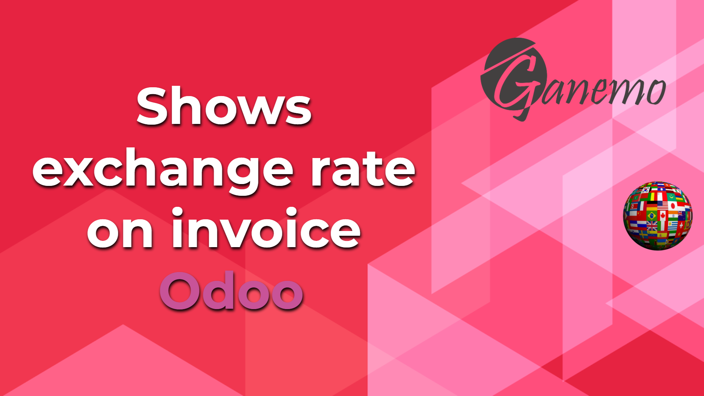

<section class="oe_container oe_dark">
    <div class="oe_row oe_spaced">
        <div class="oe_span8">
            
        </div>
        <div class="oe_span8">
            <span>Allows you to store the exchange rate value in the invoice, which is updated according to the date and currency.
        This type of exchange is the same that Odoo uses to convert the values into the company's currency,
        but we make it visible on the invoice and store it, which allows it to be easily obtained in a report.
        We recommend that modules that require knowing the exchange rate of Invoices for reporting use this module as a dependency.
        The exchange rate format is the reverse of Odoo. Ex .: "3.652".</span>
        </div>
    </div>
</section>
